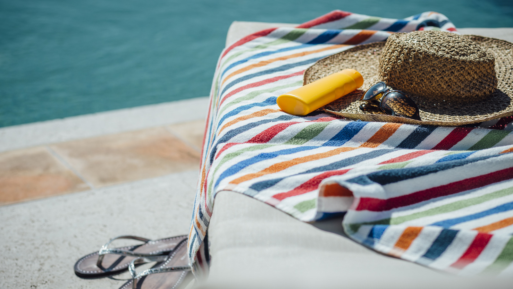
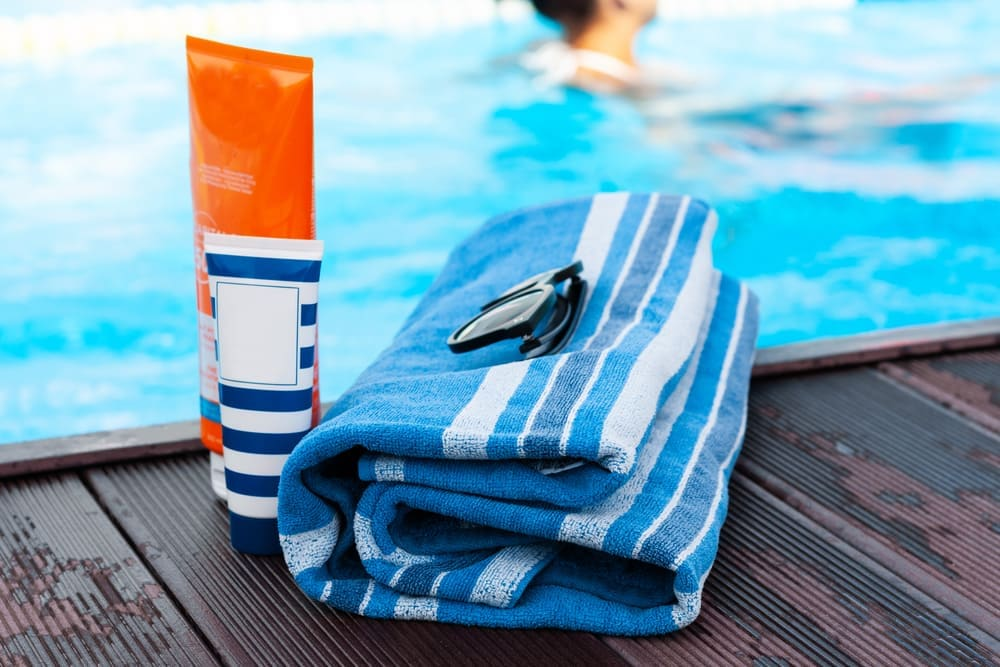
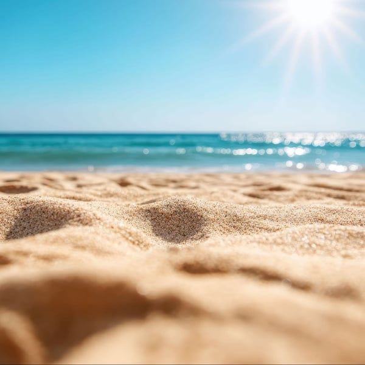

Swim-season hair: protecting braids, locs, and wigs in pool and ocean water
By a KuuStore stylist, Published November 14, 2026, Last reviewed November 14, 2026
It is 84 degrees in November, this is South Florida, swim season never really closes, and your braids are three weeks old and perfect. The pool at the family cookout in Pembroke Pines is calling your name, and you are doing the math every braided head does: is one afternoon in the water worth the frizz, the itch, and the smell that shows up two days later? Good news, with a condition. Braids and locs can swim. What they cannot do is swim unprepared and then sit wet. The whole game is three moves: fill the hair with clean water first, rinse the pool or ocean out right after, and dry all the way to the roots.
The short answer: Before you get in, soak your braids or locs with clean water and work in a little leave-in conditioner (a conditioner you put on and do not rinse out). Put the hair up, and wear a swim cap if you will be under the water a lot. When you get out, rinse with clean water the same hour, cleanse the scalp gently, and dry the hair fully, roots included, before you tie it up or sleep on it. A glued wig does not swim at all: chlorine and salt water loosen the glue, so swim in a cap, or in a low-cost swim wig you are not trying to save.
The sponge idea: why clean water goes on first
Hair takes in water the way a kitchen sponge does. A dry sponge dropped in a sink of dirty water drinks that dirty water deep. But a sponge that is already full of clean water cannot take in much more, there is no room left. Your braids work the same way. Soak them with clean water before the pool, and they arrive at the chlorine (the chemical pools use to kill germs, which dries hair out hard) already full. The pool water mostly stays on the surface, where your rinse can reach it.
Here is the same idea with a glass instead of a sponge. A full glass cannot hold your pour, the new water sheets off the top. An empty glass takes everything you give it. Pre-soaking is filling the glass with the water you choose, before the pool chooses for you. The leave-in conditioner on top acts like a lid: it coats the strand and makes both kinds of water, clean and chlorinated, slide off a little easier.

Braids and locs: before, during, after
Before. Soak the hair at the pool shower or with a spray bottle until it is wet through, not just damp on top. Smooth leave-in conditioner along the braids or locs. Put the hair up in a bun or high ponytail, loose braids drag, tangle, and pick up everything in the water. A swim cap over braids is a squeeze, but a cap over a flat bun works, and for long swims or daily swimmers it is worth it.
During. Swim. Really, that is the point of the prep. Just know that wet braids get heavy, because each braid is now carrying water, so take care with diving and with styles pulling at your edges (the soft hairs at your hairline).
After, and this is where styles are saved or lost. Rinse with clean water as soon as you can, the same hour, not that night. Work a gentle, diluted shampoo (shampoo mixed with water in a squeeze bottle, so it can reach the scalp between braids) along the scalp, massage with fingertips, and rinse until the water runs clear and the chlorine or salt smell is gone. Salt water needs the same treatment: salt left in hair keeps pulling moisture out of it for hours. Then dry. Squeeze the braids with a towel, and air-dry in the sun or sit under a hooded dryer until the roots, the last place to dry, and the place your fingers should check, are dry to the touch. Hair tied up wet, or slept on wet, grows a musty mildew smell (mildew is a type of mold that grows in damp places) that no perfume covers. Dry roots are the difference between “she swims in her braids” and “she had to take them out early.”

Wigs: the honest rule
A lace-front wig held on with glue or gel does not belong in the pool or the ocean. Water works under the lace, chlorine and salt break the glue down, and the lift you will get is not the cute kind. Worse, a loose wig in moving water can come off, a real risk, not a vanity one. Your real options: keep your head above water with the wig pinned and accept splashes only; wear a swim cap over a braided-down base with no wig; or keep one low-cost wig just for swimming, worn with a band, that owes you nothing when the chlorine fades it. After any swim in a wig, rinse it in clean water, condition it, and let it air-dry fully on a stand before it goes back on your head.
Watch a competitive swimmer’s full routine
The video below is from a swimmer who is in the water constantly: ten hacks covering how she preps her hair before practice, what she wears over it, and the wash routine that keeps chlorine from winning.
What the video shows, in plain words: Joi Wade swims competitively, so her hair faces chlorine far more often than a weekend swimmer’s, and her routine is built to survive it. She starts before the water: hair saturated with clean water and product so it cannot drink in the pool, and styles that keep hair contained instead of loose. She covers what she can while she swims, because every minute of contact you skip is damage you do not have to fix. After practice, the routine flips to removal: rinsing the chlorine out, cleansing without stripping the hair bare, and putting moisture back with conditioner, since chlorine leaves hair dry even when it looks fine. Her bigger lesson is timing, the prep happens before every swim and the rinse happens after every swim, not when the hair starts feeling bad. By then, as she shows, the dryness is already set in.

When to book instead of swimming it out
Book a KuuStore stylist if your scalp stays itchy or flaky days after a swim, if a musty smell survives a proper wash and full dry (the braids may need to come out and the hair needs a deep clean), or if your edges are sore from heavy wet braids. We look after you at the shop, serving clients from across Miami-Dade, Broward, and Palm Beach, and a pre-trip appointment is the smart move: braids installed fresh, with swim care in mind, hold up to a whole vacation of water.